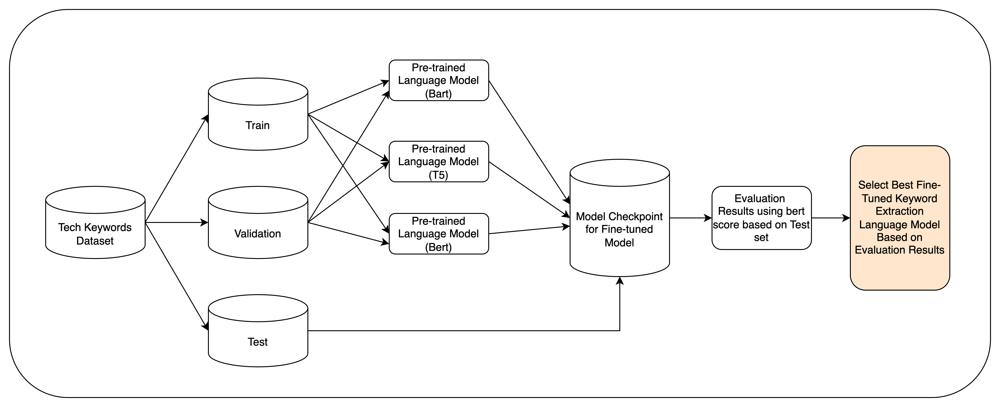

Pipeline 2 - Finetune Model for Keyword Extraction and Model Evaluation¶
Introduction¶
This document outlines the model training process for extracting tech keywords from tech-related Reddit posts. We utilize three pre-trained language models: BART, T5, and BERT, which are fine-tuned on our specific task.
Project Structure relevant to this section¶
project_root/
├── src/
│ ├── evaluation.py
│ ├── finetune_BERT.py
│ ├── model_training.py
│ └── pipeline_model_finetuning_evaluation.py
└── conf/
└── config.yaml
Pre-trained Models¶
BART (Bidirectional and Auto-Regressive Transformers) - A sequence-to-sequence model that combines bidirectional and auto-regressive approaches. - Suitable for our task due to its strong performance in text generation and summarization.
T5 (Text-to-Text Transfer Transformer) - A unified framework that treats every NLP task as a text-to-text problem. - Ideal for our keyword extraction task as it can be framed as a text-to-text generation problem.
BERT (Bidirectional Encoder Representations from Transformers) - A powerful language model that excels in understanding context and relationships in text. - Well-suited for our task due to its ability to capture deep contextual information from tech-related posts.
These models are particularly suitable for fine-tuning on tech keyword extraction because: - They have been pre-trained on large corpora, including web text, which likely includes technical content. - They can capture complex relationships and context in text, essential for identifying relevant tech keywords. - They can be fine-tuned for sequence-to-sequence tasks, allowing us to generate keywords from input text directly.
Training Pipeline¶
{kind=link}

The training pipeline consists of the following steps:
Data Preparation
Load the Tech Keywords Dataset which is already split into Train, Validation, and Test sets
Model Initialization
Load pre-trained models (BART, T5, BERT)
Initialize tokenizers for each model
Fine-tuning
Train each model on the training set
Validate performance using the validation set
Save model checkpoints
Evaluation
Evaluate model performance on the test set
Select the best-performing model based on evaluation metrics
Model Selection
Choose the best fine-tuned model for keyword extraction
Pipeline Execution¶
The entire pipeline for model finetuning and evaluation can be executed using a single script. This script coordinates the training and evaluation processes, providing a streamlined workflow.
Usage¶
To run the complete pipeline, use the following command:
python -m src.pipeline_model_finetuning_evaluation
This command will sequentially execute both the training and evaluation processes, offering an end-to-end execution of the pipeline.
Alternatively, if you wish to run individual components of the pipeline:
To train the model:
python -m src.model_training
To evaluate the model:
python -m src.evaluation
These commands use the configuration specified in the conf/config.yaml file.
Configurations¶
BERT Configuration¶
When training the BERT model, ensure that the configurations in conf/config.yaml are correctly set. The relevant parameters for BERT include:
Pretrained Model: Specify the model to be used (e.g., dbmdz/bert-large-cased-finetuned-conll03-english).
Maximum Length: Set the maximum sequence length for tokenization (e.g., 256).
Batch Size: Define the batch size for training and evaluation (e.g., 32).
Number of Epochs: Set the number of training epochs (e.g., 1).
Learning Rate: Specify the learning rate for optimization (e.g., 3e-5).
Output Directory: Define where to save the fine-tuned model (e.g., ./model_checkpoint).
Datasets: Ensure the paths to the training, validation, and test datasets are correctly specified.
Example:
bert:
pretrained_model: "dbmdz/bert-large-cased-finetuned-conll03-english"
max_len: 256
batch_size: 32
num_epochs: 1
learning_rate: 3e-5
output_dir: "./model_checkpoint"
datasets:
train: "hf://datasets/ilsilfverskiold/tech-keywords-topics-summary/data/train-00000-of-00001.parquet"
validation: "hf://datasets/ilsilfverskiold/tech-keywords-topics-summary/data/validation-00000-of-00001.parquet"
test: "hf://datasets/ilsilfverskiold/tech-keywords-topics-summary/data/test-00000-of-00001.parquet"
BART and T5 Configurations¶
When training sequence-to-sequence models like BART and T5, you need to ensure that the configurations in conf/config.yaml are correctly set. Below are the relevant parameters and their descriptions for both models.
BART Configuration¶
To configure BART, you should specify the following parameters in the conf/config.yaml file:
Base Model Name: Set the base model name for BART (e.g., facebook/bart-large).
Save Model Name: Define the name under which the fine-tuned BART model will be saved (e.g., tech-keywords-extractor_finetuned_bart).
Output Directory: Specify the directory where the model checkpoints will be saved (e.g., ./bart_tech_keywords_model).
Training Parameters: Adjust the training parameters under the training section, such as:
num_train_epochs: Number of epochs for training (e.g., 3).
per_device_train_batch_size: Batch size for training (e.g., 4).
weight_decay: Weight decay for optimization (e.g., 0.01).
T5 Configuration¶
For T5, the configuration is similar, but you need to ensure that the base model name is set to a T5 model. Here’s how to configure it:
Base Model Name: Set the base model name for T5 (e.g., google/flan-t5-large).
Save Model Name: Define the name under which the fine-tuned T5 model will be saved (e.g., tech-keywords-extractor_finetuned_t5).
Output Directory: Specify the directory where the model checkpoints will be saved (e.g., ./t5_tech_keywords_model).
Training Parameters: Similar to BART, adjust the training parameters under the training section.
Example:
base_model_name: facebook/bart-large
save_model_name: 'tech-keywords-extractor_finetuned_bart'
dataset_name: ilsilfverskiold/tech-keywords-topics-summary
output_dir: './bart_tech_keywords_model'
training:
num_train_epochs: 3
warmup_steps: 500
per_device_train_batch_size: 4
per_device_eval_batch_size: 4
weight_decay: 0.01
logging_steps: 10
evaluation_strategy: 'steps'
eval_steps: 50
save_steps: 1e6
gradient_accumulation_steps: 16
Training Process¶
The training process is implemented in the src/model_training.py file. Here’s an overview of the main functions:
load_data(data): Loads the dataset using the Hugging Face datasets library.load_model(model_name): Loads a pre-trained model and tokenizer from the Hugging Face model hub.get_feature(tokenizer, batch): Prepares the input data for training by encoding text and target keywords.train_model(tokenizer, model, dataset, save_model_name, output_dir, cfg): Handles the actual training process, including setting up the trainer, training arguments, and saving the model.
The main function uses Hydra for configuration management, allowing easy customization of training parameters.
Evaluation Process¶
After training, the models are evaluated using the test set with Bert Score. The evaluation process is implemented in the src/evaluation.py file.
The evaluation includes metrics such as precision, recall, and F1-score for keyword extraction. These metrics help assess how well the models perform in identifying relevant tech keywords from the input text.
Important: The following configuration parameters are required for the evaluation process to run smoothly:
Evaluation Model Name: Specify the path to the fine-tuned model to be evaluated (e.g., /path/to/your/model).
Results File: Define the output file path where the evaluation results will be saved (e.g., ${hydra:output}/evaluation_results/results.csv).
Example:
eval:
evaluation_model_name: /Users/tayjohnny/Documents/My_MTECH/PLP/plp_practice_proj/outputs/2024-09-16/08-48-55/tech-keywords-extractor_finetuned_bart
results_file: ${hydra:output}/evaluation_results/bart_base_model_results.csv
Conclusion¶
This document provides an overview of the model training and evaluation pipeline for tech keyword extraction. By fine-tuning powerful pre-trained language models on our specific task and providing a streamlined execution process, we aim to create an effective system for identifying relevant tech keywords from Reddit posts.